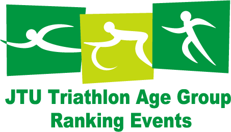

過去に開催されたイベントのページです。TMTUの様々な活動の様子をご覧ください。
開催中のイベントについては、トライアスロンイベントのページをご覧ください。
| 開催日： | 2015年9月27日（日） |
| 開催地： | 東京都大田区城南島 |
| 申込締切： | 2015年 9月6日（日） |
| お問い合わせ： | ホームページから TEL：042-370-7431 |
「第26回 東京都トライアスロン選手権大会」 （選手権の部）は、日本トライアスロン選手権東京ブロック代表選手および第69回国民体育大会東京都代表選手の選考を兼ねた、重要な大会です。
一般の方および高校生は、「東京都トライアスロン渡良瀬大会」（一般の部、 高校生の部、 リレーの部）に参加できます。この大会は、JTUエイジランキングの対象となります。
| 開催日： | 2015年6月28日（日） |
| 開催地 ： | 渡良瀬遊水地（群馬県邑楽郡板倉町） |
| アクセス ： | 車の場合：東北自動車道館林インターチェンジより約20分 |
| 電車の場合： | 東武日光線 板倉東洋大学前駅下車 徒歩約20分 |
| 申込締切： | 2015年5月31日（金） |
| 注意事項 |
|
| お問い合わせ | ホームページから 電話：042-370-7431 |
東京都における次世代のトライアスロン競技を担う有望なジュニア選手（中学生・高校生）の発掘及び強化を目的として，夏休み中に伊豆大島にてトレーニングキャンプを実施します。
本合宿の参加条件を満たすジュニア選手については、参加費5000円で参加することも可能です。
次世代を担うジュニアトライアスリート達とともに伊豆大島で競い合おう！
| 期間： | 2015年８月13日（木）～16日（日） ３泊４日（船中１泊含む） |
| 実施場所： | 伊豆大島 | 申込： | 受講を希望される方は以下の要項に従い、TMTUに申し込んでください（申し込み先メールアドレスと電話番号は実施要項に記載してあります）。 >>実施要項 >>スケジュール |
| 締め切り： | 2015年6月8日（月） |
U19、U15トライアスロン選手権出場希望者のうちドラフティング許可レース未経験者は、各都道府県の主催するドラフティング講習会に参加する義務があります。
| 開催日時： | 2015年7月9日(木) 13:00〜 |
| 開催地： | 稲城市総合グラウンド駐車場集合 |
| 参加費： | 一人2,000円 |
| 講師： | 山倉和彦（日体協指導者） |
| 開催日時： | 2015年５月31日(日) 午後２時〜 |
| 開催地： | 彩湖道満パーク（埼玉県戸田市） >>集合場所地図 |
| 参加費： | 一人2,000円 |
| 講師： | 小原裕也・堀越和彦（JTU中級指導者) |
| 申し込み時に 必要な情報： |
|
| 申込・ お問い合わせ： |
TMTU強化委員 堀越和彦 
|
東京都の地域組織では、どなたでも参加できる練習会を行っています。詳細は各地域組織のWebサイトをご覧ください。
東京・城南地区の夏の訪れを告げ、夏の終わりとともに去ってゆく"2015城南アクアスロンシリーズ（全５戦）"の申し込みを開始しました！
昨今のトライアスロンブームも手伝い、多くの申込が予想されます。出場される方は早めにお申し込みください。
>>募集要項
| 日程（会場）： | 《第１戦》７月５日（日） めぐろさんまアクアスロン大会（会場：目黒区民センター） 《第２戦》８月23日（日） にちがくアクアスロン大会（会場：日本学園中学校・高等学校） 《第３戦》９月20日（日） 渋谷区民アクアスロン大会（会場：渋谷区スポーツセンター） 《第４戦》９月23日（祝） 世田谷区アクアスロン大会（会場：世田谷区総合運動場公園） 《第５戦》10月12日（祝） 大田区アクアスロン大会（会場：大田区萩中公園） |
| 申込方法： | SPORTS ENTRYのサイトよりお申込ください。 |
本教室は、主にシニア（60歳以上）を対象にトライアスロンを体験し興味を持ってもらうことで、本競技の普及・振興、ひいては参加者の健康の維持・増進に寄与することを目的としています。
講義内容は、初心者・経験者でも本競技に興味をもってもらえるよう、楽しく効果的な練習方法等をプロトライアスリートが指導します。
なお会場は、贅沢に代々木公園陸上競技場(織田フィールド)と代々木競技場屋内プールを貸し切って開催します！
※本教室は60歳以下の成人も参加可能です。
| 開催日時： | 2015年9月22日（火・祝） |
| 会場： | 代々木公園陸上競技場(織田フィールド)・代々木競技場屋内プール |
| 参加費： | 無料 |
本教室は、小学生・中学生・高校生を対象として、トライアスロンを体験し興味を持ってもらうことで、本競技の普及・振興、ひいては2020年東京オリンピックで活躍できる選手の発掘・育成を目的としています。
講義内容は初心者・経験者でも本競技に興味をもってもらえるよう、楽しく効果的な練習方法等を現役大学生・生徒の選手やプロトライアスリートが指導します。
1回目(8/12)の教室では、スイム・バイク・ランニングのノウハウを、プロトライアスリート・日大ウルトラトライアスロン部・日本学園トライアスロン部の現役選手達から学ぶことができます。2回目(9/22)の教室では、贅沢に代々木公園陸上競技場(織田フィールド)と代々木競技場屋内プールを貸し切った中で、プロトライアスリートから指導を受けることができます！
| 開催日時： | 1回目：2015年8月12日（水） 2回目：９月22日（火） |
| 会場： | 日本学園（2015年8月12日（水）） 代々木公園陸上競技場(織田フィールド)・代々木競技場屋内プール（９月22日（火）） |
| 参加費： | 無料 |
東京・城南地区の夏の訪れを告げ、夏の終わりとともに去ってゆく"2015城南アクアスロンシリーズ（全５戦）"です。
>>募集要項
| 日程（会場）： | 《第１戦》2015年７月５日（日） めぐろさんまアクアスロン大会（会場：目黒区民センター） 《第２戦》８月23日（日） にちがくアクアスロン大会（会場：日本学園中学校・高等学校） 《第３戦》９月20日（日） 渋谷区民アクアスロン大会（会場：渋谷区スポーツセンター） 《第４戦》９月23日（祝） 世田谷区アクアスロン大会（会場：世田谷区総合運動場公園） 《第５戦》10月12日（祝） 大田区アクアスロン大会（会場：大田区萩中公園） |
| 申込方法： | SPORTS ENTRYのサイトよりお申込ください。 ※申込み締切日は大会によって異なります。各大会の申込み期間をご確認ください。 ※定員に達し次第、受付を終了いたします。 |
2015 JTUパラトライアスロンミーティングを開催いたします。
今回は、世界チャンピオンを輩出している日本パラサイクリング連盟理事長の権丈泰巳氏にお越しいただき、ご講演いただきます。
また、JADAにアンチ・ドーピング講習会をご担当いただき、最新情報もお聞かせ願えるかと思います。
| 開催日時： | 2015年12月6日（日）13:00～ |
| 場 所： | 日本財団ビル２階（赤坂１－２－２） >>アクセス |
| 詳 細： |
開催案内（JTUサイト）
|
東京オリンピック開催地のお台場で泳ごう！ビーチには特設トライアスロンブースを設置。参加者のご家族や友人もご一緒にお越しください。2015年7月25日(土)〜9月13日(日)の計５回の開催されます。
伊豆諸島の一つである"神々の集いし伝説の島"・神津島にて第4回神津島アクアスロン大会を8/29(土)に開催します。
"ここは本当に東京都？"と思うほどの美しい白浜と透きとおる青い海で泳ぎ、晴れた日には富士山まで見渡せる「新東京百景」にも選ばれる素晴らしい景観の中を走りぬけます。
また表彰パーティーでは食べきれないほどの海の幸と地元の方の温かいおもてなしで心もお腹も満たしてくれます。
なおスイムは、波の静かな湾内の白浜を横目に並行に泳ぐため初心者の方も安心・安全に泳げます。
参加費は競技区分に関わらず表彰パーティー代込みで一般6,000円／高校生4,000円。
本大会は締切期限前に募集定員に達する大好評の大会のため、早めのエントリーをおすすめします。
>>大会要項
>>申込先
過去の大会の様子（クリックで拡大します）
都内でできるトライアスロンとして人気の昭和記念公園大会。
プールなので、初心者でも安心。もちろんベテランの皆さんにも楽しんでもらえる人気大会です。
| 開催日時： | 2015年９月12日（土） |
| 会場： | 国営昭和記念（立川市・昭島市） |
| 対象： | 一般（高校生は除く） ※ＪＴＵ登録義務です（リレーを除く） |
今年の高校生ＮＯ.1を決める大会。 皆さんにチャンスがあります！
初めてで、少し不安という高校生は、距離が短いチャレンジの部があります。
| 開催日時： | 2015年９月12日（土） |
| 会場： | 国営昭和記念（立川市・昭島市） |
| 対象： | 高校生 ※スプリントの部のみＪＴＵ登録義務です（リレー、チャレンジの部は推奨） |
小中学生の全国大会。自分の持てる力を発揮し、トライアスロンを楽しみましょう！
| 開催日時： | 2015年９月12日（土） |
| 会場： | 国営昭和記念公園（立川市・昭島市） |
| 対象： | 小中学生 |
学校法人共立女子学園で開催される『女性にとってのスポーツの価値と力』―女性とスポーツフォーラム Vol.1―で、国際オリンピック委員会（IOC）委員でもあるマリソル・カサド国際トライアスロン連合（ITU）会長が、「オリンピックにおける女性参加の歴史、IOCの今日の取り組み、国際トライアスロン連合（ITU）の実績、等」と題し基調講演を行います。
| 開催日時： | 2015年５月18日（月）13:00～17:00 |
| 場所： | 共立講堂（東京都千代田区一ツ橋２－２－１） |
| 参加料： | 無料 |
| 申込： | JTUサイトから申し込みください。 参加受付は先着順（座席数・貸出同時通訳数に制限有）となります。 |
ゴールデンウイーク恒例の4人一組で楽しむ駅伝大会です。
| 開催日時： | 2015年５月６日（火・祝） 開会式 10:30～ 閉会式 13:30～ |
| 開催地： | 稲城中央公園総合グラウンド及びその周辺 |
| 競技方式： |
|
台風のためアクアスロンとなり、スイム500m、ラン５ｋｍに距離も短縮されましたが、東京代表選手は健闘により好成績を収めることができました。
応援ありがとうございました。
【東京代表選手の成績】
男子：外山高広 ２位
女子：松枝愛子 13位
大会の様子（クリックで拡大します）
女性審判員の育成と新規審判員の発掘のためにトライアスロンに関する情報共有と交流会を以下の通り実施いたします。
参加ご希望の方は11月8日 (日) までに必要事項（下記参照）をご記入の上、TMTU事務局（tmtu@tokyo.email.ne.jp）へメールにてご連絡下さい。
| 開催: | 一般社団法人東京都トライアスロン連合（TMTU） |
| 主管： | TMTU女子委員会 |
| 開催協力： | TMTU技術・審判委員会 |
| 対象参加者： | TMTU所属の女性審判員と女性トライアスリート |
| 定員: | 30名（※応募多数の場合は先着順にて応募を締め切らせていただきます） |
| 日時： | 2015年11月15日 午後5時30分から約2時間 |
| 場所： | 渋谷勤労福祉会館（第4洋室） |
| URL: | https://www.city.shibuya.tokyo.jp/est/kinro.html |
| 住所： | 〒150-0041 渋谷区神南 1-19-8 |
| 電話： | 03-3462-2511 |
| 内容： |
|
| 応募要項： |
|
| 日時： | 2015年11月29日（日）13:00-16:00（12:30受付） |
| 場所： | 日本学園中学校・高等学校（〒156-0043 東京都世田谷区松原2-7-34） |
| 講師： | 鈴木仁（TMTU/第1種公認審判員） |
| 受講資格： | 第3種資格者で2年以上の審判実績（年間2大会以上）を有する者、または第2種資格を更新しようとする者 |
| 講習内容： |
|
| 受講料： | 4,000円 |
| 受講受付： |
|
| 受付締切： | 11月16日（月） |
| 受講可否連絡： | 11月20日（金） |
| 日時： | 2015年11月29日（日）10:00-12:00（9:30受付） |
| 場所： | 日本学園中学校・高等学校（〒156-0043 東京都世田谷区松原2-7-34） |
| 講師： | 堀越和彦（第2種公認審判員） |
| 受講資格： | 受講翌年度4月1日に18歳以上のJTU会員（審判のみ登録可） |
| 講習内容： | トライアスロン審判員への期待値と3種審判員実務のポイント |
| 受講料： | 2,000円 |
| 受講受付： |
|
| 受付締切： | 11月16日（月） |
一般社団法人東京都トライアスロン連合の加盟団体である目黒区トライアスロン連合では、東京都の地域競技団体におけるＪＴＵ審判員の育成推進と、本競技にかかる競技者・審判員としての競技ルールの理解及び浸透の契機作りを目的として、下記のとおり第3種公認審判員の認定講習会を実施（主管）いたします。
>>募集要項
>>申請書
| 開催日時： | 2015年6月20日（土） 15:00～17:00 |
| 会場： | 日本学園中学校・高等学校 |
| 受講料・認定料： | 2,000円 |
2015年2月15日（日）、トライアスロン審判員認定・更新講習会を実施します。
この講習会への参加により、日本トライアスロン連合公認 審判員資格の新規取得および更新ができます。講習のみの参加も歓迎ですので、審判員を目指す方はぜひご参加ください。
>>日本トライアスロン連合公認審判員認定・更新講習会要項
>>申請書
東京都では次世代のトライアスロン競技を担う有望なジュニア選手（中学３年生・高校生）の発掘及び強化を目的として，沖縄県・宮古島にて実施する本キャンプへの参加者を募集します。
| キャンプ期間： | 平成28年１月４日（月）～１月７日（木） ３泊４日 |
| キャンプ先： | 沖縄県・宮古島市 |
| 募集人数・ 対象者： |
JTU強化指定選手・TMTU強化指定選手及びテスト生（中学3年生・高校生）５～９名程度 |
| 費用： | JTU強化指定選手・TMTU強化指定選手 30,000円 ／ テスト生 60,000円 |
| 参加申込期限： | 平成27年11月15日 (日) |
| 募集要項 | |
公認スポーツ指導者資格の認定期間は、資格登録後4年間です。
資格を更新するためには、資格有効期限が切れる6か月前までに、JTUの定める研修会を最低1回受けることが義務づけられていますが、今回案内する東京都体育協会の研修会を受講することにより更新が可能です。
| テーマ： | 「中学・高校生年代の可能性を引き出すスポーツ指導」 |
| 主催： | 公益財団法人 日本体育協会、公益財団法人 東京都体育協会 |
| 開催日時： | 2015年9月12日（土） |
| 会場： | トヨタドライビングスクール東京（東京都立川市羽衣町1-3-4） |
| 申込： | 受講を希望される方は要項、申込書をダウンロードの上、各自で都体協に申し込んでください。 >>開催要項 >>参加申込書 |
東京都トライアスロン連合では、中学生・高校生のジュニア選手を対象に、全国大会等の代表選手に選出されるための選考会等に出場することにより、派遣選手の競技力向上とその経験がジュニア選手全体に及ぶことを目的として、遠征支援大会に係る大会参加費及び遠征費用等の支援を実施いたします。
>>募集要項
| 遠征支援大会： | 第17回 日本ジュニアトライアスロン選手権（2015／長良川） （日本U19トライアスロン選手権（JOCジュニアオリンピックカップ）） （日本 U15 トライアスロン選手権） |
| 遠征日程： | 2015年７月31日（金）～８月２日（日）２泊３日 |
| 自己負担金： | なし ※大会参加費、宿泊費（２泊分）現地交通費（合宿所から大会会場間）、指導料を本連合にて負担 |
| 申込期限： | 2015年６月27日（土） |
JTU認定記録会2015（スイム＆ラン）東京ブロック ～チャレンジトライアスロン2020 TOKYO～
2015年3月8日、日本トライアスロン連合（JTU）公認の認定記録会を開催しました。2006年度よりJTUの小学生（ジュニア）の強化を目的としたジュニア部門の全国統一基準JTU公認級設定に伴い、（一社）東京都トライアスロン連合でも小学生部門を設定しております。
| 12年リザルト | 13年リザルト | 14年リザルト |
| 09年全リザルト | 10年リザルト | 11年リザルト |
| 06年リザルト | 07年リザルト | 08年リザルト |
| 12年リザルト |
| 2010年度 | 2011年度 | |
| 2007年度 | 2008年度 | 2009年度 |


{kind=link}
{kind=link}
{kind=link}
{kind=link}
{kind=link}
{kind=link}
{kind=link}
{kind=link}
{kind=link}
{kind=link}
{kind=link}
{kind=link}
{kind=link}
{kind=link}
{kind=link}
{kind=link}
{kind=link}
{kind=link}
{kind=link}
{kind=link}
{kind=link}